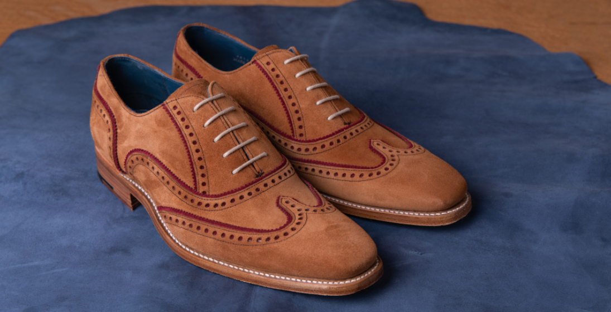
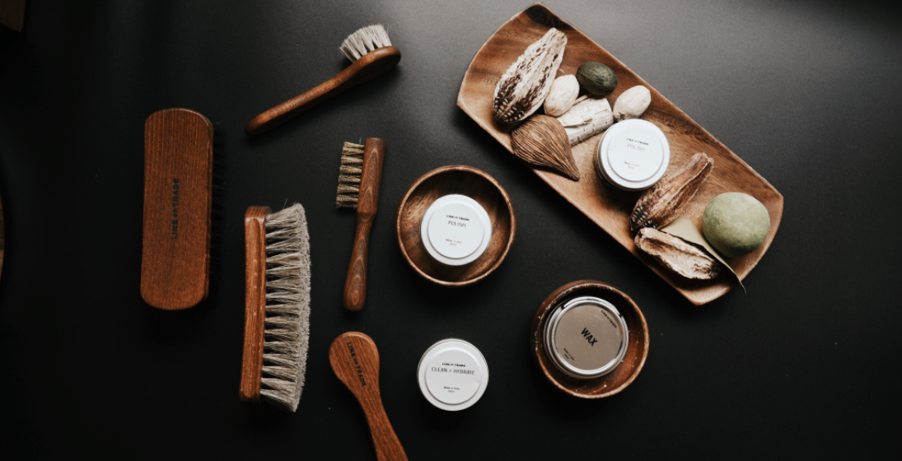

Как ухаживать за обувью из кожи
Материала для обуви лучше натуральной кожи все ещё не придумали. Качественную кожу очень приятно носить, она идеально ложится по ноге, в нужных местах немного растягивается. В кожаной обуви, если она соответствует погоде, создаётся хороший микроклимат – ноги не мёрзнут, не потеют, и чувствуют себя очень комфортно. Неудивительно, что по статистике больше 60% покупателей выбирает обувь именно из гладкой натуральной кожи. Вдобавок кожа практична и не требует трудоёмкого ухода.
Но это совсем не означает, что можно раз в полгода протереть обувь тряпочкой и на этом остановиться. Так же, как кожа лица и тела, материал обуви нуждается в заботе. Регулярный уход надолго продлит срок службы любимой пары и сделает её аккуратной и сияющей, словно только что из магазина.
На что стоит обратить внимание перед покупкой
Подбирайте обувь точно по размеру и полноте. Слишком тесная обувь будет чрезмерно растягиваться, и кожа испортится, не говоря уже о дискомфорте. А если модель сидит слишком свободно, то при ходьбе на ней начнут образовываться складки и заломы.
Перед тем, как надеть обувь первый раз
Перед первой ноской для новой пары нужно подобрать водо- или грязеотталкивающее средство, подходящее для натуральной кожи, и обработать кожу в соответствии с инструкцией. После высыхания – чистить кремом.
Ежедневный уход за кожаной обувью в домашних условиях
Лучше всего заняться обувью сразу после возвращения домой. Если этого не делать, то со временем появляются трудновыводимые пятна, портится цвет кожи, образуются трещины.
После каждого выхода на улицу протирайте обувь сухой салфеткой, если на коже только пыль, или влажной тряпкой - в случае сильного загрязнения. Начинайте мыть с каблука, затем очистите подошву и после этого – материал верха. После мытья нужно как следует протереть пару мягкой тканью, чтобы избавить от лишней влаги. Иначе обувь будет сушиться очень долго.
Второй этап – сушка.
Ни в коем случае не используйте источники тепла – батарею, обогреватель, фен с горячим воздухом. Да, они сушат быстро, но за это приходит расплата в виде задубевшей покоробившейся кожи.
Нужно вытащить стельки, набить обувь бумагой либо положить внутрь формодержатели и сушить при комнатной температуре. Тогда ваши туфли или сапоги надолго сохранят красивую форму без заломов.
Сушка длится довольно долго, и поэтому не рекомендуется носить одну и ту же пару каждый день. Обувь и подкладка должны отдохнуть и расправиться, только тогда вам будет комфортно и тепло.
И наконец – крем.
Сухую и чистую пару нужно обработать кремом, чтобы кожа оставалась эластичной, мягкой и блестящей.
Нанесите крем тоненьким слоем с помощью обувной щётки, и аккуратно распределите по всей поверхности. Затем через несколько часов, когда крем впитается, сотрите остатки сухой салфеткой и отполируйте кожу мягкой тряпочкой.
Крем подбирается точно в цвет обуви, поэтому стоит задуматься ещё перед покупкой, каким уходовым средством вы будете пользоваться.
В магазине легко подобрать черный, коричневый и самый универсальный – бесцветный крем. В продаже есть и другие цвета, но бывает сложно найти нужный оттенок.
По мере необходимости дополнительно обрабатывайте пару водоотталкивающими спреями.